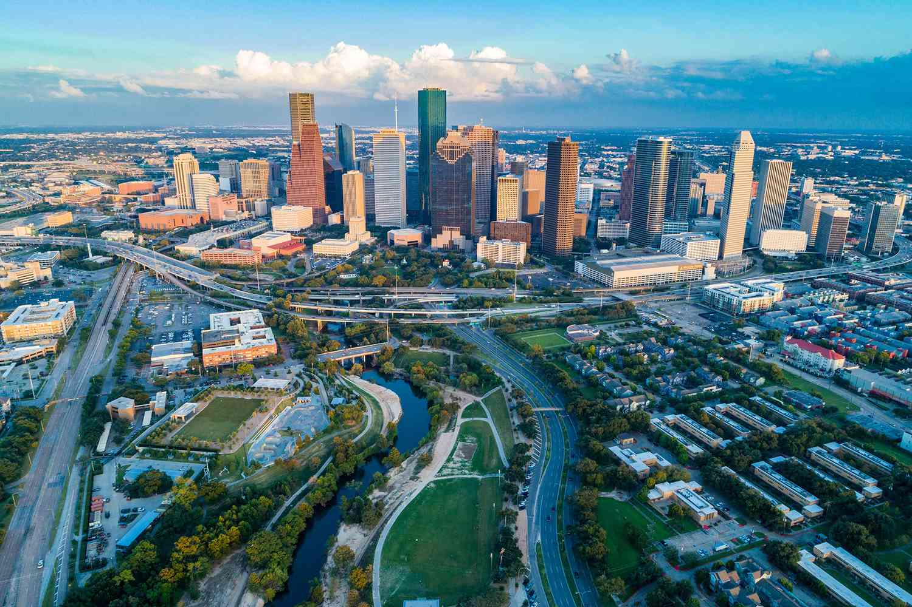

This section is about my hometown.
My hometown is Bucharest, in Romania. Currently I am living in Houston, Texas, in the USA. Look at the pictures to see the two towns. My hometown is Bucharest, in Romania. Currently I am living in Houston, Texas, in the USA. Look at the pictures to see the two towns. My hometown is Bucharest, in Romania. Currently I am living in Houston, Texas, in the USA. Look at the pictures to see the two towns.
My hometown is Bucharest, in Romania. Currently I am living in Houston, Texas, in the USA. Look at the pictures to see the two towns. My hometown is Bucharest, in Romania. Currently I am living in Houston, Texas, in the USA. Look at the pictures to see the two towns. My hometown is Bucharest, in Romania. Currently I am living in Houston, Texas, in the USA. Look at the pictures to see the two towns.
My hometown is Bucharest, in Romania. Currently I am living in Houston, Texas, in the USA. Look at the pictures to see the two towns. My hometown is Bucharest, in Romania. Currently I am living in Houston, Texas, in the USA. Look at the pictures to see the two towns. My hometown is Bucharest, in Romania. Currently I am living in Houston, Texas, in the USA. Look at the pictures to see the two towns.
Romania is first, Houston is the 2nd one.

Make sure to click "BACK" at the bottom to get back to the sitemap